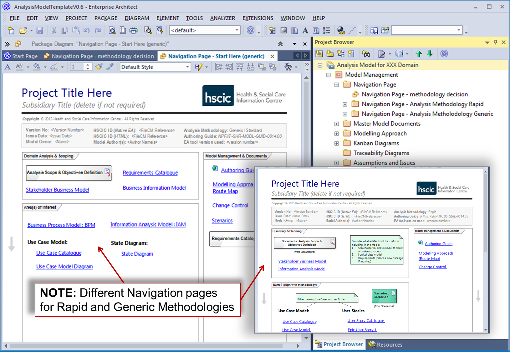

The Navigation Page is an Artefact that provides the primary navigation mechanism for Analysis Models, enabling easy-access
to their Artefacts as well as other supporting content. It is important to develop and maintain the Navigation Page throughout
the Model’s lifecycle, otherwise it can quickly become difficult to use due to its size and complexity.
example navigation page
example navigation page
Navigation Page Artefacts showing the different pages for each of the defined Methodologies (the Model Structure is shown
in the Project Browser)
The Navigation Page Artefact is constructed using the currently approved CASE Toolset (EA), and held in the top-level Navigation
Page Package (within the ‘Model Management’ — top-level Package). It is integral to and developed solely within the analysis
model.
NOTE: - The Analysis Model Template is typically used as the starting point for constructing the Analysis Model Artefact, and in particular the Navigation Page.
The specific Artefacts / Documents that are linked to via the Navigation Page are defined by the Analysis Methodology chosen
at the beginning of the Project, which forms the basis for the defined Artefact Set for a Project (For details of the approved
layout for the Navigation Page Artefact, see the section: Navigation Page [Adopted Notations]).
The purpose of the Navigation Page Artefact is to provide a single easy-access point / navigation mechanism for the Model’s
content. It layout is formally defined and organised according to the chosen Methodology into a series of areas (e.g. for
the Key Stages of a Project as well as for Model Management and Documents) upon the Artefact Diagram, which contain links
to its key Artefacts / Documents.
The development status for the Navigation Page Artefact is Mandatory for all Analysis Models. Its content is developed iteratively
across all stages of the Projects lifecycle. It is publishable as a Formal Deliverable Product as an integral part of the
Analysis Model.
The construction of the Navigation Page Artefact is defined by its Adopted Notations.
NOTE: - There is currently no Product Description defined for this Artefact.